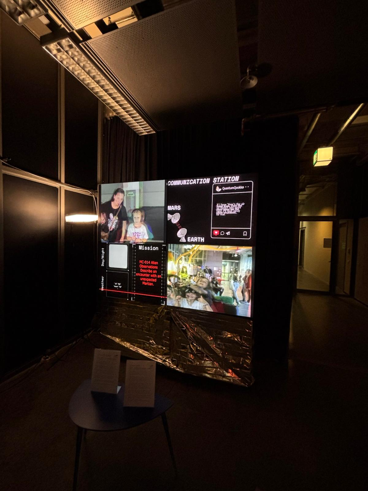
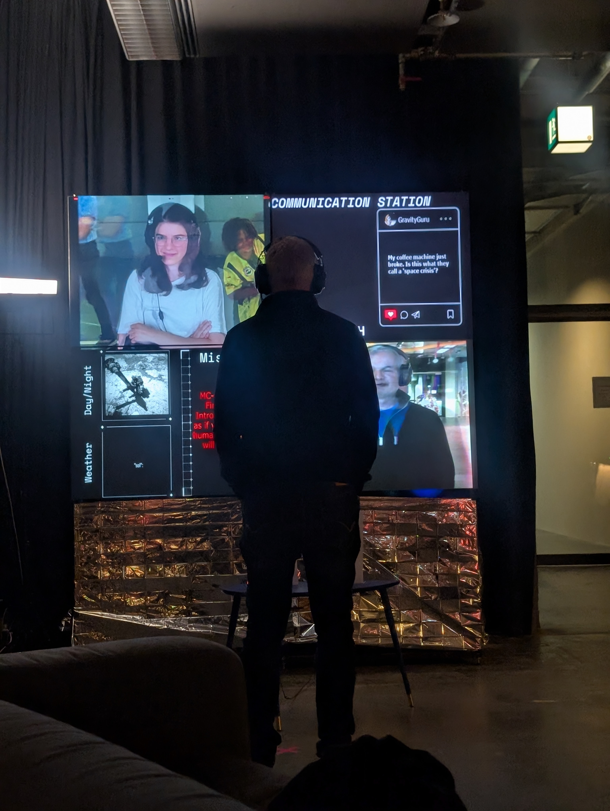
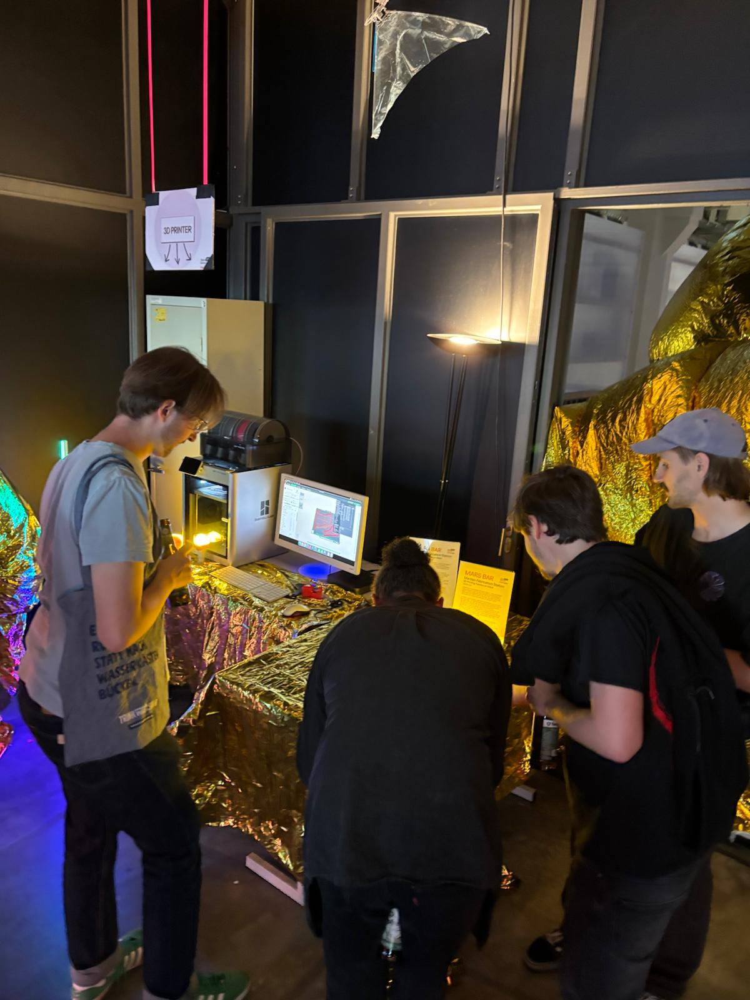
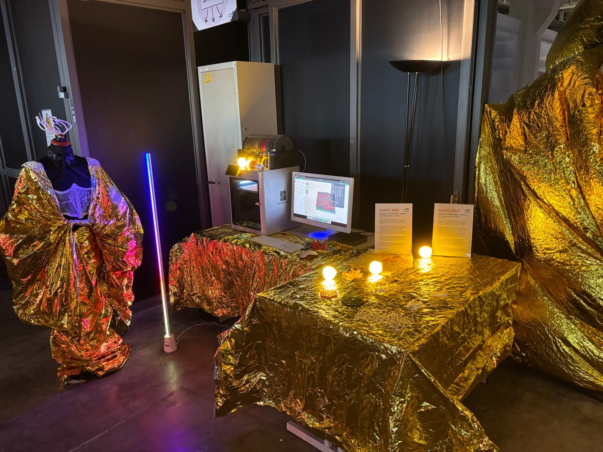
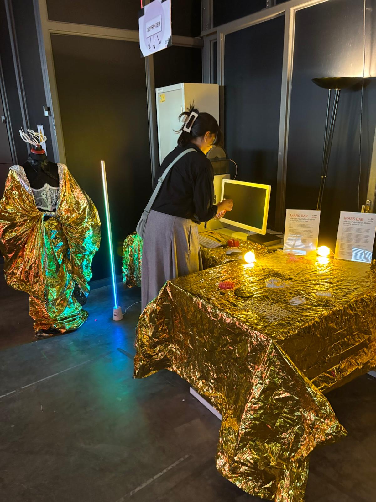

In the project MARS!, ZKM | Hertzlab aims to challenge the signifier the planet Mars has become and use it to address pressing Earth matters. We imagine that global society has decided to make Mars settlements a democratic Commons project. Rather than leaving Earth behind while the wealthy escape to redder pastures, Mars becomes a democratic endeavor for everyone, exploring practical and utopian aspects of the question: “What would we do if we could start over?”
Scientists and citizen scientists are invited to design and prototype key features of a Mars settlement: habitats capable of withstanding adverse weather, recycling systems that make the best use of resources, social orders resilient under crisis, and care systems for a planet humans did not ask to inhabit.
The skills needed for a democratic Mars settlement mirror those required to adapt to a climate-changed Earth. Through this project, we gain the competence to build a resilient society today. Mars slowly becomes MARS!, helping us understand what we need to do to create resilient societies here and now.


Developed by the Hertzlab’s Yasha Jain, the Mars Communication Station is a speculative installation that explores what it means to communicate across planetary distance. Spanning both the ZKM | Hertzlab and the HfG Karlsruhe’s Bio Design Lab, this dual-site work invites you to step into a video call between Earth and Mars — a portal to the edges of our technological and imaginative reach.
At the core of the installation are two terminals representing Earth and Mars. Each is equipped with a camera, microphone, screen, and headphones. Visitors are invited to engage with their counterpart on the “other planet.” But there's a twist: all transmissions include a deliberate communication delay of several seconds, echoing the real latency experienced when sending signals between the two planets.
This brief temporal dislocation — just a few seconds — is enough to make you feel the vastness of space. It creates a subtle but profound tension: conversation becomes slower, more intentional, and strangely poetic.
To help guide these interplanetary dialogues, the installation provides a rotating set of interactive “missions” — imaginative prompts designed to inspire reflection, humor, and play. Visitors are encouraged to follow a mission or go off-script to shape their own dialogue across the divide.
Surrounding the central exchange, the installation loops the latest imagery from Mars, drawn from NASA’s active rover missions. These haunting visuals are paired with real-time weather data from the InSight lander — including wind speed, atmospheric pressure, and surface temperature — grounding this speculative environment in present-day science.
“Mars Twitter” offers a glimpse into an imagined Martian digital culture: a live stream of fictional tweets authored by robots, colonists, scientists, and satellites. It’s part satire, part worldbuilding — and a reminder that wherever humans go, their memes will follow.
Mars Communication Station blends real Martian data, speculative fiction, and participatory technology into a meditation on time, distance, and communication.
Design considerations included:
Welcome to the Martian Fabrication Station — a speculative design installation imagining a future where clothing is not bought, but fabricated. On Mars, where every gram of cargo counts and textiles don’t exist in abundance, fashion must be printed, repurposed, and redefined.



At the center of the installation stands a mannequin wearing a Martian saree — a hybrid garment that merges cultural heritage with survival engineering. The top is composed of modular, 3D-printed units, designed to snap together in endlessly customizable arrangements. These pieces can be reshaped, replaced, or reconfigured based on need, mood, or role — offering both aesthetic flexibility and material efficiency in a world where adaptability is everything. The 3D printed material can be melted and reprinted in another shape.
Draped across the body is the “Saree,” an Indian flowing garment constructed from heat-protective foil, the same kind used to line habitats and shield equipment from solar radiation. Its reflective surface catches light like silk, but serves as thermal insulation — a poetic fusion of tradition and technology. the corset for the saree is 3d Printed and can bve recycled. Along with this, there are samples of Nasa 3d "textiles" that have been released in opensource. I also had a shape that is modular and can be rearranged to repurpose into whatever shape is needed. This was to showcase the versatility of 3D printing.
The Martian Fabrication Station asks: How do we preserve cultural identity in an alien environment? What does beauty look like when materials are scarce, and every design must justify its existence?